A checkpoint on a day not yet published — mock-up
Drawn on the real app (the demo week). Tuesday has never been published. The proposed parts are drawn in: the button beside Publish day, the line under the day heading naming who set the checkpoint and when, the "3 since checkpoint ▾" button (it opens the same list as a published day's pending), and an ORIG tag on two changed pucks. Monday is published, with a real change waiting: its AL1 tag is what the app draws today.
When the checkpoint is set, the day becomes the new starting point: the count goes back to nothing and the ORIG tags disappear, until the next change. "Who" reads the shared account (Admin) until the database brings personal logins, then the callsign.
1 · The button's word
Option 1 — "Set checkpoint"
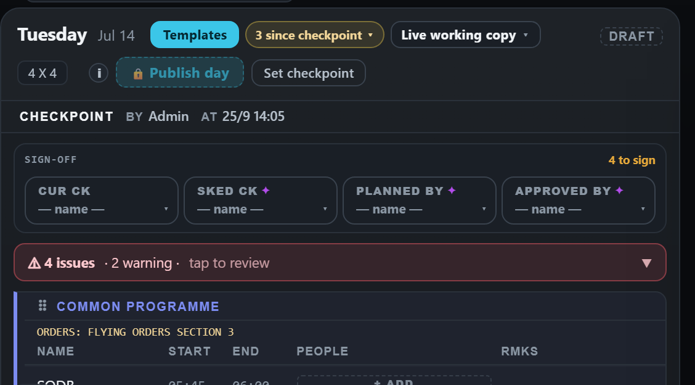
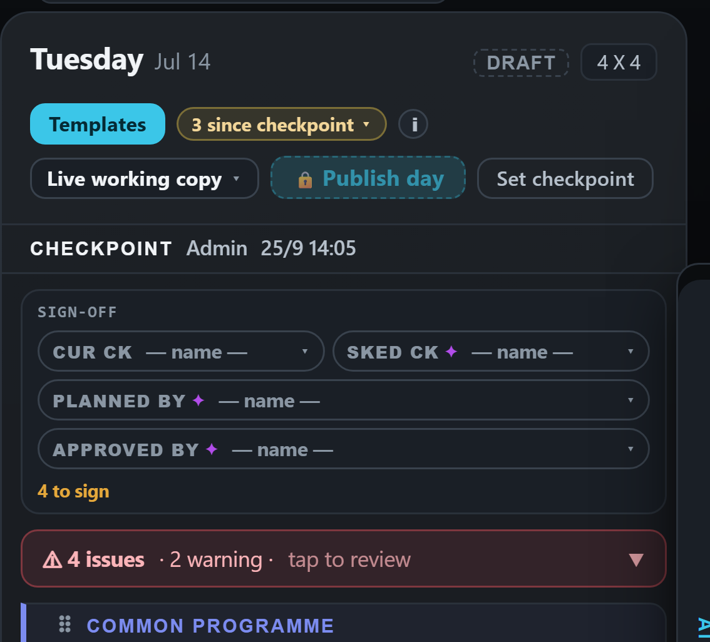
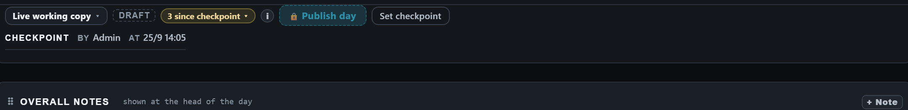
Option 3 — "Hand over"
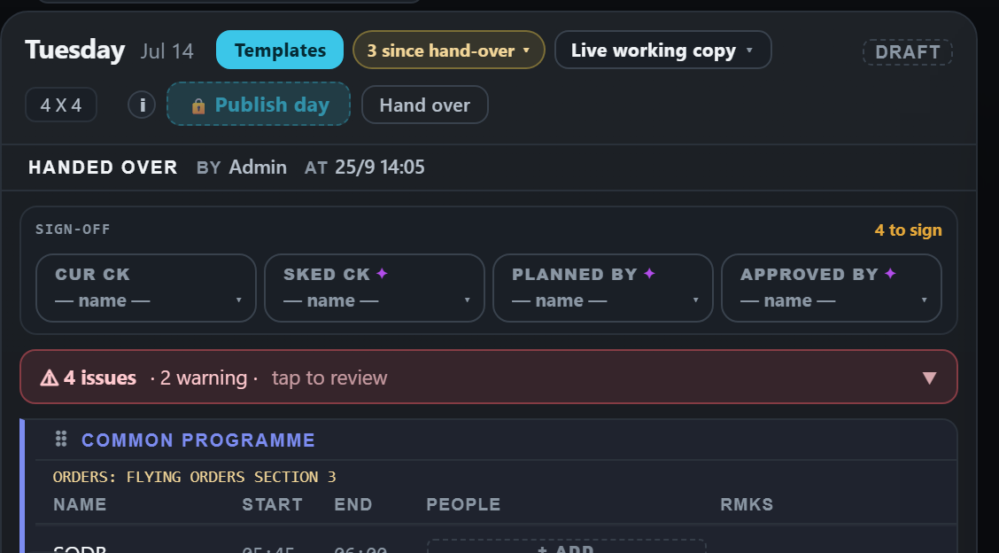
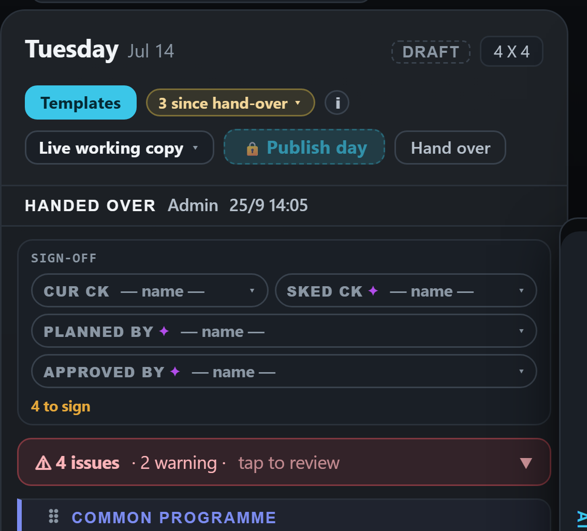
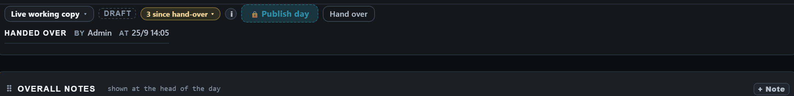
2 · The ORIG tag on a changed puck (Tuesday, not yet published)
A — hollow, plain edge
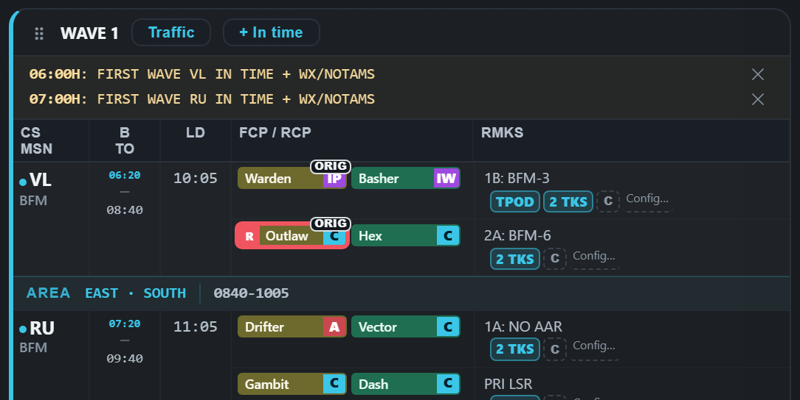
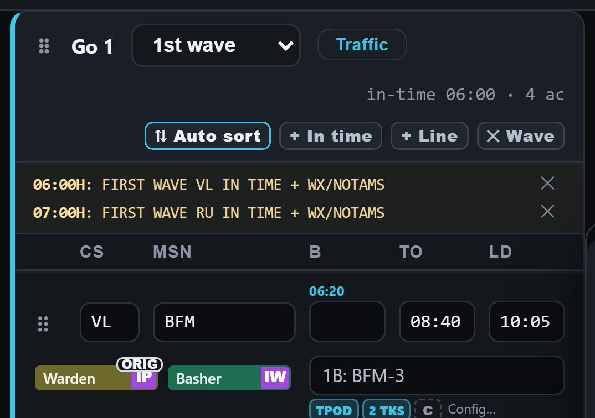
B — hollow, dotted edge (like a waiting AL tag)
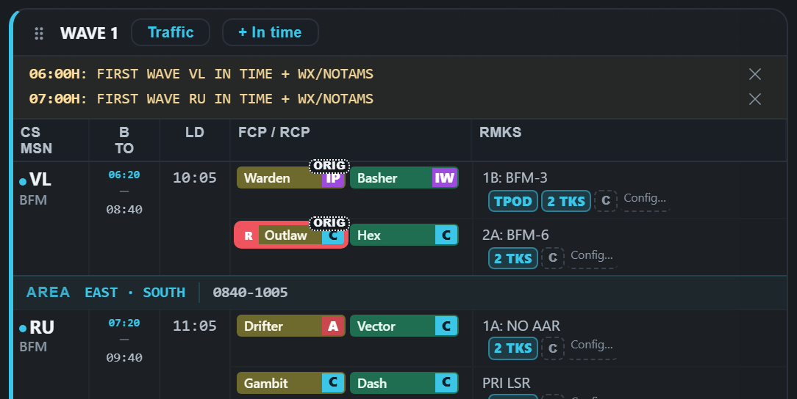
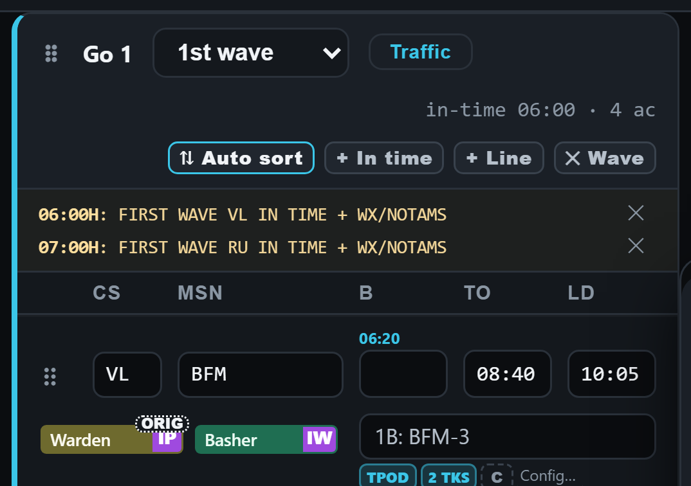
For comparison — Monday, published, with a change waiting (today's real AL1 tag)
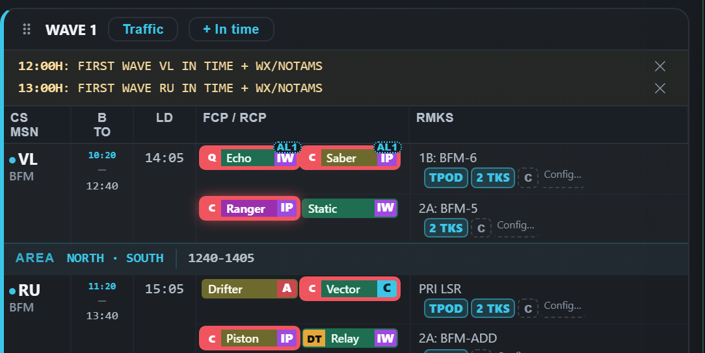
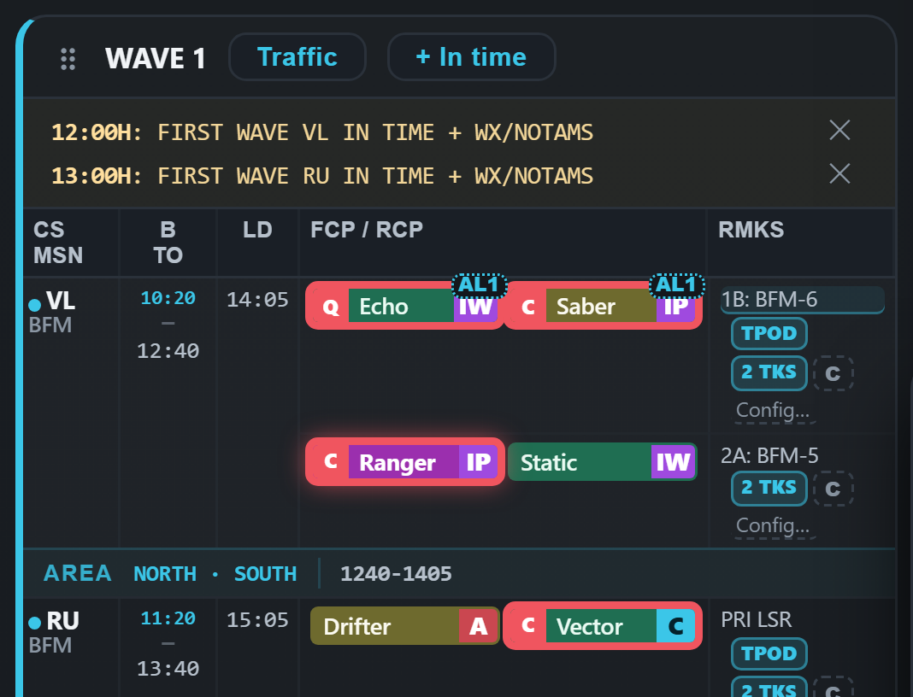